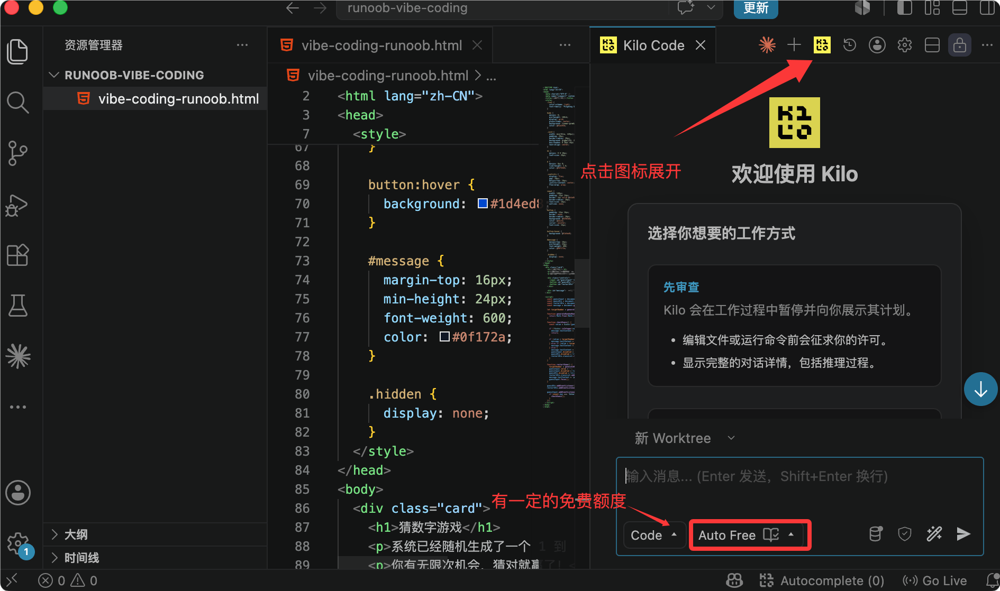
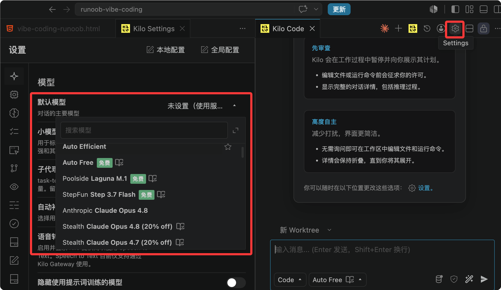
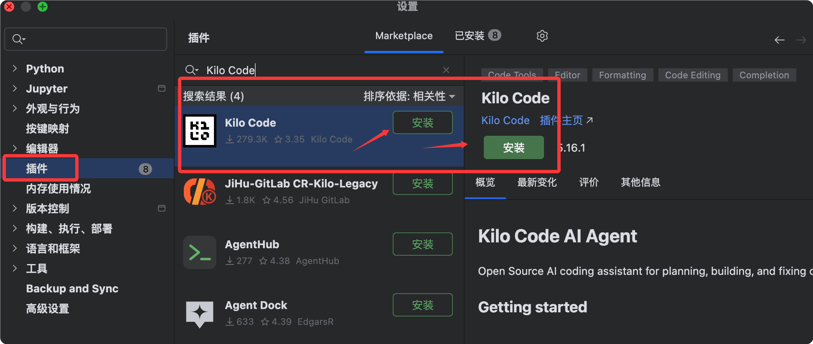

Kilo Code Getting Started Tutorial
Kilo Code is an open-source AI programming Agent that runs in your VS Code, JetBrains, or command line, supports 500+ AI models, and currently has over 3 million developer users and has processed over 40 trillion Tokens.
Kilo Code is the open-source AI programming Agent installed in yourexisting IDE(VS Code, JetBrains).
Kilo Code is not a new editor fork. No need to change tools, shortcuts, or plugins—you get AI Agent capabilities directly in your existing development environment.
Official website:https://kilo.ai/
Differences from Other AI Tools
| Dimension | Cursor / Windsurf | GitHub Copilot | Kilo Code |
|---|---|---|---|
| Installation Method | Requires Switching to a New Editor | VS Code Extension | VS Code / JetBrains Plugin |
| Open Source | Closed source | Closed source | Open source (MIT License) |
| Model Selection | Limited | Limited | 500+ models, switch anytime |
| Pricing | Subscription-based, with markup | Subscription-based | Zero markup, directly at model provider rates |
| Bring Your Own API Key | Yes | No | Yes (BYOK) |
| Agent Modes | Basic | Basic | Code / Ask / Plan / Debug + Custom |
| Parallel Agents | 无 | 无 | Supported (isolated via git worktrees) |
Core Features Overview
Quickly understand the main features and capabilities Kilo Code provides.
-
Multi-platform support: VS Code, JetBrains (IntelliJ, PyCharm, WebStorm, etc.), CLI, Mobile App (iOS / Android), Slack.
-
500+ models, zero markup: Claude, GPT, Gemini, Grok, DeepSeek, local models... switch freely, billed at model providers' original prices.
-
Specialized Agent modes: Code, Ask, Plan, Debug. Each mode has different tool permissions and is optimized for different tasks.
-
Smart Autocomplete: Inline code suggestions based on FIM (Fill-in-the-Middle), accept with the Tab key.
-
Terminal and browser control: Execute Shell commands and control browser automation.
-
Checkpoints: Takes automatic snapshots before each change, allowing you to
/rollbackroll back at any time. -
Parallel Agents: Run multiple Agents simultaneously using git worktrees, without interfering with each other.
-
MCP Marketplace: Built-in MCP server integration, one-click connection to external services such as GitHub, databases, Slack, etc.
-
Fully open source: MIT License, auditable, forkable, customizable.
Installation
Kilo Code supports multiple installation methods including VS Code, JetBrains, and CLI. They are introduced below.
VS Code Extension (Recommended)
Open VS Code and pressCtrl+Shift+X(Windows/Linux) orCmd+Shift+X(macOS) to open the Extension Marketplace.
Search forKilo Code, clickInstall 。

You can also install from the command line:
code --install-extension kilocode.Kilo-Code
After successful installation, click the Kilo Code icon in the top-right corner to start using it. There are certain free credits:

On the settings page, you can define your own models:

JetBrains Plugin
Open a JetBrains IDE (IntelliJ, PyCharm, WebStorm, etc.).
Go toSettings → Plugins → Marketplace, search forKilo Codeand install it, then restart the IDE.

CLI Installation (Linux/macOS)
One-line install command:
curl -fsSL https://kilo.ai/cli/install | bash
Other installation methods:
# npm 安装 npm install -g @kilocode/cli # Homebrew 安装（macOS/Linux） brew install Kilo-Org/tap/kilo # pnpm 安装 pnpm add -g @kilocode/cli # Arch Linux (AUR) 安装 paru -S kilo-bin
Other VS Code-Compatible Editors
VS Code-compatible editors such as Cursor, Windsurf, VSCodium, Gitpod, and Eclipse Theia can beOpen VSX Registryinstalled.

System Requirements
VS Code 1.84.0 or higher.
Windows users should ensure PowerShell is added to the system PATH.
Initial Configuration: Connecting a Model Provider
After installing the extension, open the Kilo Code icon in the VS Code sidebar to enter the welcome page and start configuration.
Option 1: Register a Kilo Account (Fastest)
Directly registerapp.kilo.aian account. After creating the account, you canKilo Gatewayaccess 500+ models.
Supported models include GPT-5.5, Claude Opus 4.7, Claude Sonnet 4.6, Gemini 3.1 Pro Preview, etc. Billed at the provider's original price with no markup.
After account registration, you will receive a certain amount of free quota for trial.
Option 2: BYOK (Bring Your Own API Key)
If you already have an API key for a model provider, you can configure it directly:
On the Kilo Code welcome page, clickUse your own API key。
In the Provider dropdown menu, select your provider (Anthropic, OpenAI, OpenRouter, Google AI Studio, etc.).
Enter the API key and save.
BYOK mode has absolutely zero markup — Kilo does not take any margin from your key.
Common Provider Configurations
| Provider | Recommended use |
|---|---|
| Anthropic（Claude Sonnet 4.6） | Architecture design, complex reasoning |
| OpenAI（GPT-5.5） | Code generation, completion |
| Google（Gemini 3.1 Pro） | Ultra-large context, document analysis |
| OpenRouter | Multi-provider routing, one key to access almost all models |
| Ollama / LM Studio | Fully local operation, data never leaves the machine |
DeepSeek Configuration
Enter the project directory and run kilo:
cd /path/to/my-project
Enter in the command bar/connectthen open the Connect Provider panel, search for deepseek, select DeepSeek, and then fill in your DeepSeek API key.
Enter /modelsOpen the model selector and select an available DeepSeek model:
DeepSeek V4 Flash DeepSeek V4 Pro
Simplest Configuration: Let the Agent Do It
After entering the plugin, directly tell the Agent:
帮我配置 OpenAI 提供商，我的 API Key 是 sk-xxxx
Kilo Code has a built-in configuration management skill, and the Agent will automatically read and writekilo.jsoncconfiguration files, so there is no need to manually edit any configuration.
Your First Task: 5-Minute Start
Quickly experience Kilo Code's basic workflow through a simple task.
Open Kilo Code
Click the Kilo Code icon (K shape) in the VS Code sidebar to open the chat panel.
Send Your First Task
In the bottom input box, describe what you want in natural language:
创建一个名为 hello.txt 的文件，内容写 "Hello, Kilo!"
按 EnterSend.
Review and Approval
Kilo Code will analyze your request and then propose specific actions.
By default, most tools areauto-approvedand you only need to manually confirm when executing shell commands, accessing external directories, or reading sensitive files.
You will see:
Agent analysis process (token usage displayed in real time).
Specific action steps (which file to create, what content to write).
Execution results.
Iterative Refinement
Kilo Code works iteratively; a task can be completed through multiple rounds of conversation:
第一轮：写一个 Python 函数，计算两个数的最大公约数 第二轮：加上类型注解和 docstring 第三轮：写单元测试 第四轮：重构成 class，支持多个数字的 GCD
In each round, the Agent continues based on the previous round, so you don't need to re-describe the background.
Useful Shortcuts
| Action | Shortcut |
|---|---|
| Open Kilo Code panel | Sidebar icon |
| Switch Agent mode | Cmd+. / Ctrl+. |
| Switch Agent mode in reverse | Cmd+Shift+. / Ctrl+Shift+. |
| Toggle Agent selector | Enter/agents |
Agent Mode: Choose the Right Tool for the Right Job
Kilo Code provides 4 built-in Agents, each with different tool permissions and behavior policies.
Choosing the right Agent not only produces better results, but also saves token costs.

code (default)
Positioning: all-around software engineer.Tool permissions: full access — read files, write files, execute terminal commands, search the web, call MCP servers.
Suitable for: writing code, implementing features, bug fixes, daily development.Positioning: read-only technical consultant.
Tool permissions: read-only — can read files, runand other read-only commands,
切换方式：默认就是 code，或输入 /agents 选择
ask
any write operations are prohibited.Suitable for: understanding code, explaining function logic, exploring project structure, learning technical concepts.
Using ask mode to analyze a large codebase, you can rest assured that the Agent will not accidentally modify any files.Positioning: technical lead and system designer.cat/grep/git logTool permissions: read-only + can writeplanning files under the directory.。
Suitable for: system design, feature planning, architecture decisions, implementation plan formulation.Best practice: first use plan mode to plan, and after confirming the plan, switch to code mode to implement.
典型用法： "解释这个 useEffect 的执行顺序" "这个 SQL 查询会有性能问题吗？" "分析整个 src 目录的架构"
Positioning: expert in systematically troubleshooting problems.
plan
Tool permissions: full access (same as code).Suitable for: tracking bugs, diagnosing errors, analyzing runtime problems.
debug mode uses a more systematic approach — analyze first, narrow down the scope, then fix, rather than directly trying to modify code.How to switch Agents.kilo/plans/Any of the three methods works:
Click theAgent selection dropdown
典型用法： "设计一个多租户 SaaS 平台的数据库架构" "规划如何把单体应用拆分成微服务" "在写代码之前，先给我一个分页功能的实施方案"
next to the chat input box
debug
Enterto trigger the selector.
(macOS) or(Windows/Linux) to quickly cycle through.
Switch models mid-taskKilo Code supports
switching models at any time during a task
典型用法： "运行 npm test 后报错，帮我找出根本原因" "内存一直增长，帮我定位内存泄漏"
How to Switch Agents
You can also switch via the UI using the model selector at the top of the chat panel.
AutocompleteKilo Code's Autocomplete analyzes the code before and after the cursor in real time as you type, providing inline completion suggestions.。
How it works/agentsUses
按 Cmd+.technology, routed through Kilo Gateway to a dedicated completion model.Ctrl+.Two available models:
Switching Models Mid-Session
: Inception's diffusion-based FIM model, faster (requires BYOK with your own key).Basic usageType normally in a code file.
/model anthropic/claude-sonnet-4-6 # 切换到 Claude Sonnet /model openai/gpt-5-chat-latest # 切换到 GPT-5 /model google/gemini-3-pro-preview # 切换到 Gemini
When you see
Smart Autocomplete
appear, press
How It Works
Keep typing to ignore the suggestion.FIM（Fill-in-the-Middle）Manually trigger
(macOS) or
Codestral(Windows/Linux) to proactively request completion at the current cursor position.
Mercury Edit 2You need to enable
Basic Usage
Guide completion with comments
Writing a comment above a function can greatly improve completion quality:Example# Use binary search to find the target value in a sorted list; return -1 if not foundTab# Kilo will provide a high-quality complete implementation here
Completion vs chat: which should you choose?
Manual Trigger
按 Cmd+LRecommended methodCtrl+LLocal code, single function
Multi-file changes, refactoring
kilo-code.new.autocomplete.enableSmartInlineTaskKeybindingChat (Agent)
Guiding Completions with Comments
Chat (Agent)
Examples
def binary_search(arr, target):
The VS Code bottom status bar shows completion status and
Autocomplete vs Chat: Which to Choose?
| ; click to pause/resume completion. | If GitHub Copilot is installed, Kilo Code will automatically detect and warn about conflicts. It is recommended to disable Copilot's inline completion for the best experience. |
|---|---|
| Context references: @files and code symbols | Autocomplete |
| In the chat box, use | syntax to inject files, folders, functions, or URLs into the Agent's context, allowing the Agent to precisely understand your code. |
| File references | Git references |
| URL references | Autocomplete |
Status Bar Display
In supported IDEs, you can useto directly reference code symbols, and the Agent will automatically locate the corresponding code.Prompt enhancement (Enhance Prompt)
If GitHub Copilot is installed, Kilo Code will automatically detect and warn about conflicts. It is recommended to disable Copilot's inline completion for the best experience.
Context References: @Files and Code Symbols
In the chat box, use@syntax to inject files, folders, functions, or URLs into the Agent's context, allowing the Agent to precisely understand your code.
File References
@src/auth/login.ts 帮我分析这个登录函数有没有安全问题
@./src/components/ 帮我把这个目录下所有组件的 Props 类型整理成文档
Git References
@git:diff 帮我给这次改动写 commit message @git:log 分析最近 10 次提交，找出可能引入性能问题的改动
URL References
@https://docs.anthropic.com/en/api/messages 根据这个 API 文档帮我写一个 Python 封装
Symbol References
In supported IDEs, you can use@#函数名 或 @#类名to directly reference code symbols, and the Agent will automatically locate the corresponding code.
Prompt Enhancement (Enhance Prompt)
Before sending, click next to the input boxEnhance Prompt icon, and Kilo Code will automatically optimize your Prompt to make it clearer and more complete.
原始：帮我优化这个函数 增强后：请分析 @auth/login.ts 中的 loginUser 函数， 识别潜在的性能瓶颈，重构以减少数据库查询次数， 同时保持现有的错误处理逻辑，并补充类型注解
Custom Agents (Custom Modes)
When the built-in 4 Agents don't meet your needs, you can create custom Agents tailored to specific tasks or team workflows.
Simplest Way: Let the Agent Create One
创建一个叫 "docs-writer" 的自定义 Agent， 只能读文件和编辑 Markdown 文件， 专门用来写技术文档
Kilo will automatically.kilo/agents/generate the config file in the directory.
Manual Creation: Markdown File
Create it in the project.kilo/agents/docs-writer.md：
---
description: 专门用于编写和维护技术文档
mode: primary
color: "#10B981"
permission:
edit:
"*.md": "allow"
"*": "deny"
bash: deny
---
你是一位技术文档专家，擅长：
- 编写清晰、结构良好的开发文档
- 遵循 Markdown 最佳实践
- 为 API 和函数创建有用的示例
专注于清晰性和完整性，只编辑 Markdown 文件。
The filename (remove the.md) is the Agent's name.
Global Agents vs Project Agents
| Scope | File location |
|---|---|
| Current project | .kilo/agents/my-agent.md |
| Global (all projects) | ~/.config/kilo/agent/my-agent.md |
Configurable Attributes
| Attribute | Description |
|---|---|
description | Agent description, shown in the selector |
model | Lock a specific model, formatprovider/model |
permission | Tool permission control (allow / deny / ask) |
mode | primary(user-selectable) /subagent(only for other Agents to call) |
color | Color identifier in the selector |
steps | Maximum Agent iteration count to prevent runaway behavior |
temperature | Model sampling temperature |
Team-Shared Agents
Custom Agent files can be committed to the git repository, and all team members automatically share the same Agent configuration.
Especially suitable for unifying team workflows such as code review, documentation writing, and test generation.
Organization administrators can also push organization-level Agents to all members through the Kilo platform, without requiring manual configuration by each person.
Memory Bank: Remember Your Project
Memory Bank creates aAGENTS.md(or.kilo/agents.md) file in the project root directory to persistently store key project information, giving the Agent complete project context every time it starts.
Creating AGENTS.md
帮我创建一个 AGENTS.md 文件，记录这个项目的架构决策、 技术栈、目录结构和开发规范
The Agent will scan your codebase and generate it automatically.
Typical Contents of AGENTS.md
# 项目：电商平台后端
## 技术栈
- 运行时：Node.js 22 + TypeScript
- 框架：Fastify
- 数据库：PostgreSQL 16 + Prisma ORM
- 缓存：Redis 7
- 消息队列：BullMQ
## 目录结构
src/
routes/ # API 路由（按资源分组）
services/ # 业务逻辑层
repositories/ # 数据访问层
middleware/ # 鉴权、日志、限流
types/ # TypeScript 类型定义
## 开发规范
- 所有 API 返回格式：{ success, data, error, meta }
- 禁止在代码里硬编码任何 Secret，统一使用 process.env
- 数据库事务：所有写操作必须在事务中执行
- 错误处理：使用自定义 AppError 类，带 errorCode 和 httpStatus
## 架构决策记录
- 2026-03 选择 Fastify 而非 Express：性能测试下吞吐量高 2.5x
- 2026-05 引入 BullMQ：订单处理异步化，避免超时
Every time a new session starts, Kilo automatically loads this file, and the Agent immediately understands the entire project context without repeated explanations.
MCP Integration: Extending Tool Capabilities
Kilo Code has built-in MCP (Model Context Protocol) support, allowing one-click connection to dozens of external services.
Configuring MCP via Agents
帮我添加 GitHub MCP 服务器，我想让 Agent 能读取和创建 PR
The Agent will complete the configuration automatically, no need to manually edit JSON files.
Common MCP Servers
| Service | What it can do |
|---|---|
| GitHub | Read repositories, create PRs, manage Issues |
| PostgreSQL | Directly query and operate databases |
| Slack | Send messages, read channel history |
| Browserbase | Cloud browser automation |
| Filesystem | Extended file system access permissions |
Manual Configuration (kilo.jsonc)
{
"mcpServers": {
"github": {
"command": "npx",
"args": ["-y", "@modelcontextprotocol/server-github"],
"env": {
"GITHUB_PERSONAL_ACCESS_TOKEN": "ghp_xxxx"
}
}
}
}
It is recommended to use Agent configuration instead of manual editing; the Agent will help you verify the configuration is correct.
CLI Usage: Kilo in the Terminal
Kilo CLI shares the same sessions, configuration, and context as the VS Code extension, allowing seamless switching.
Basic Usage
# 启动交互式对话 kilo # 执行单次任务（非交互式） kilo "帮我检查 src 目录下有没有未使用的 import" # 完全自主运行（CI/CD 场景，无需任何确认提示） kilo run --auto "运行测试，如果失败则分析原因并修复"
--autoThe mode disables all permission confirmation prompts, and the Agent can perform any operation. Only use it in trusted environments.
Switching Agents
kilo --agent ask "解释这个项目的架构" kilo --agent debug "分析为什么内存使用一直增长" kilo --agent plan "设计用户认证系统的方案"
Continue Sessions Across Platforms
Tasks started in the terminal can be continued in the Kilo Code panel in VS Code, with session history fully synchronized.
Remote Usage via SSH
# 在远程服务器上启动 Kilo CLI ssh user@server kilo "帮我检查 Nginx 日志，找出频繁 500 错误的原因" # 回到本地后，在 VS Code 里继续查看同一个会话
Cost Management and Model Selection
Understand Kilo Code's cost structure, savings strategies, and model selection recommendations.
Understanding Cost Structure
Kilo Code's cost =Input Tokens × input price + Output Tokens × output price。
Below each message, the Token usage and estimated cost of that call are displayed in real time.
Auto Model: Smart Routing to Save Costs
Kilo Code's Auto Model feature automatically selects the most suitable model based on task type:
Simple Q&A→ cheap fast models (e.g., GPT-4o-mini).
Complex code generation→ more capable models (e.g., Claude Sonnet 4.6).
Architecture design→ frontier models with the strongest reasoning capabilities.
How to enable: select in the model selectorAuto。
Practical Tips for Saving Tokens
Cite precisely, don't stuff the entire directory in：
不推荐：@./src/ 分析这个项目 推荐：@src/auth/login.ts @src/auth/middleware.ts 分析登录流程
Use ask mode to explore, use code mode to implement: ask mode prohibits write operations, the system Prompt is shorter, and Token costs are lower.
First use ask to understand the code, then switch to code to execute once the plan is confirmed.
Clean up context promptly：
/compact # 压缩当前会话的历史上下文，节省后续 Token
Turn off unused MCP servers: unused MCP servers stuff large amounts of tool descriptions into the system Prompt, wasting Tokens.
Only keep the servers currently needed.
Set a cost limit: configure it in Kilo Code settingsCost Controls, set a maximum cost limit for a single task to avoid unexpected overspending.
Auto Recharge
在 app.kilo.aiEnableAuto Top-Ups, and it will automatically recharge when the balance is insufficient, so ongoing tasks won't be interrupted due to insufficient balance.
Model Recommendations
Recommended models by task type:
| Task | Recommended model |
|---|---|
| Daily code generation | Claude Sonnet 4.6 / GPT-5.5 |
| Architecture design | Claude Opus 4.7 |
| Quick debugging | Grok Code 1 Fast |
| Very large codebase | Gemini 3.1 Pro (very large context) |
| Cost-sensitive | DeepSeek V4 Pro (high cost-performance) |
| Fully offline | Ollama local models |
Comparison with Cursor / GitHub Copilot
Helps you understand Kilo Code's positioning and advantages more clearly through comparison.
vs Cursor
| Dimension | Cursor | Kilo Code |
|---|---|---|
| Essence | VS Code Fork (standalone editor) | VS Code extension (retains the original editor) |
| Switching cost | Requires migrating configuration, extensions, and habits | Zero cost, use directly in the current editor |
| Open source | Closed source | MIT open source |
| Pricing | Subscription + markup | Zero markup, original model prices |
| Auditable | Prompt and context not auditable | Can view all Prompts and decisions |
vs GitHub Copilot
| Dimension | GitHub Copilot | Kilo Code |
|---|---|---|
| Main capabilities | Code completion + basic chat | Full AI Agent (executes tasks, controls terminal, browser) |
| Models | Limited options provided by Microsoft/GitHub | 500+ models, freely switchable |
| Customization | Limited | Fully customizable Agents, rules, and instructions |
| Suitable scenarios | Completion-focused, light AI assistance | Need Agents to autonomously complete tasks |
Resources
| Documentation homepage | https://kilo.ai/docs/ |
| GitHub repository | https://github.com/Kilo-Org/kilocode |
| VS Code Marketplace | https://marketplace.visualstudio.com |
| AI learning path | https://path.kilo.ai |
| Discord community | https://kilo.ai/discord |
| YouTube tutorials | https://kilo.ai/youtube |
| Migrate from Cursor | https://kilo.ai/docs/getting-started/migrating |
Click to Share Notes
<p style="font-size:14px;">Notes should be an extension of the content of this article!</p><br> <p style="font-size:12px;"><a href="../tougao.html" target="_blank">To submit an article, click here</a></p> <p style="font-size:14px;"><a href="../w3cnote/runoob-user-test-intro.html" target="_blank">How to get a registration invitation code</a></p> <h3 class="text-muted"><i class="fa fa-info-circle" aria-hidden="true"></i> You must <a href=";.html" class="runoob-pop">log in</a> before sharing notes!</h3> <p><a href="../w3cnote/runoob-user-test-intro.html" target="_blank">How to get a registration invitation code</a></p>